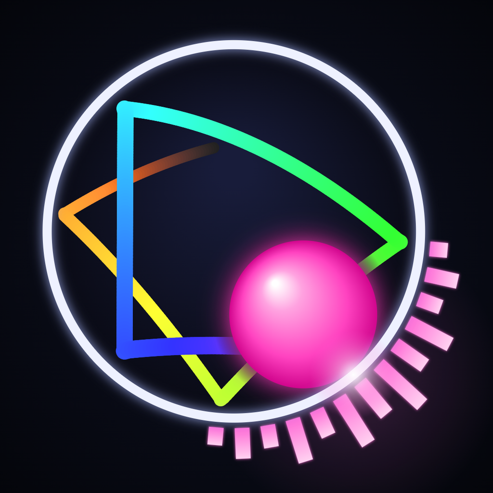

Border Beats
Border Beats is a program that runs on your own computer. It renders physics and music videos (balls bouncing inside a circle, with the song playing on every collision) and can post them to your own TikTok account through TikTok's official Content Posting API, after you confirm each post.